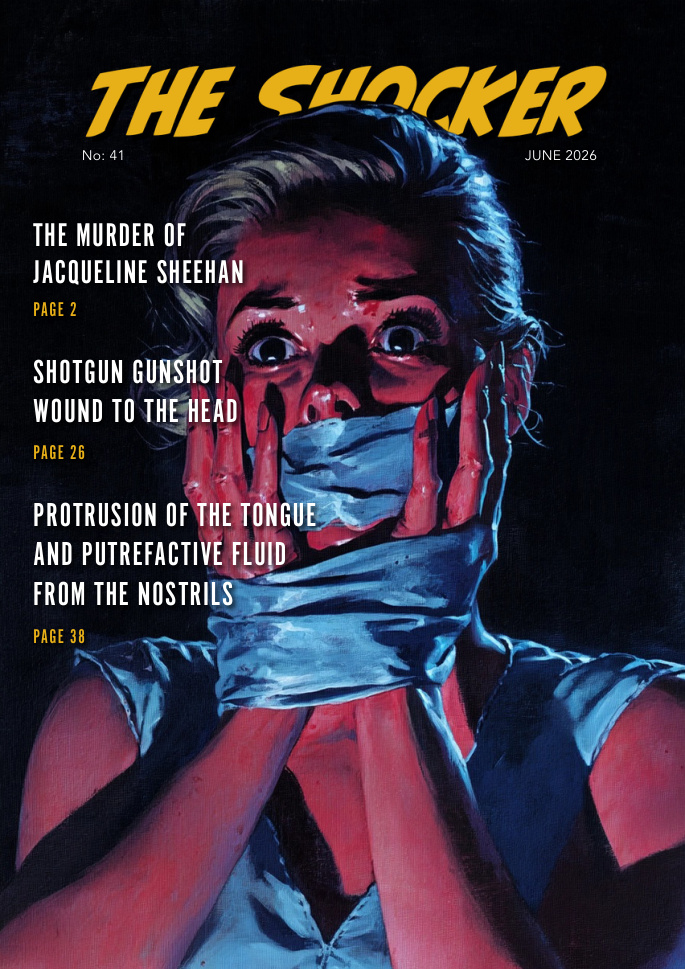

TRUE CRIME · 48 PAGES
THE SHOCKER No.41
June 2026 · Complete Reader
上次阅读Page 1 / 48
已完成学习版2 / 48
COMPLETE 48-PAGE READER
整本 48 页已经导入。第 2、3 页已有完整中英学习内容，其余页面先保留原刊并可正常翻页。

TRUE CRIME · 48 PAGES
June 2026 · Complete Reader